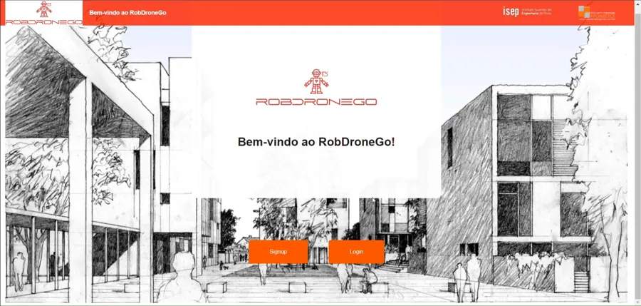
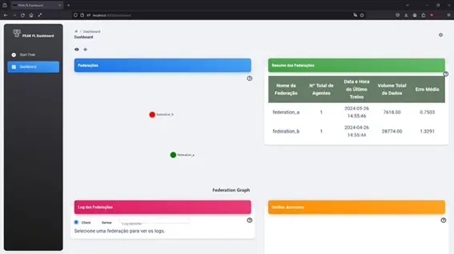
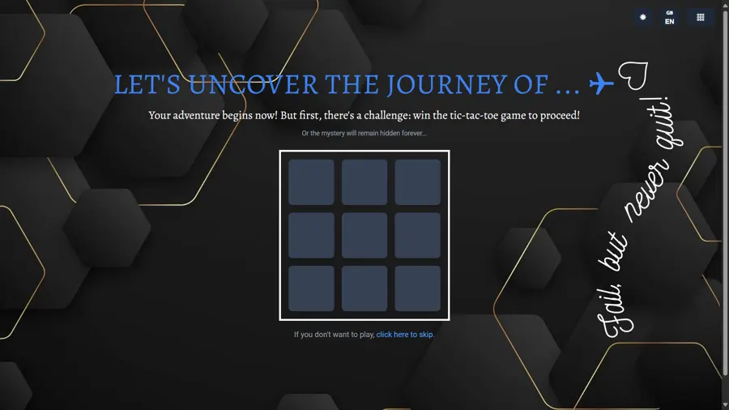
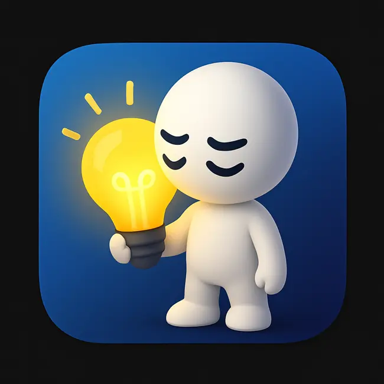
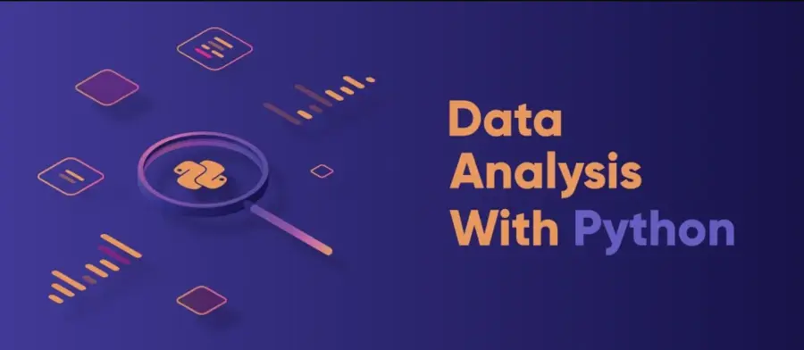
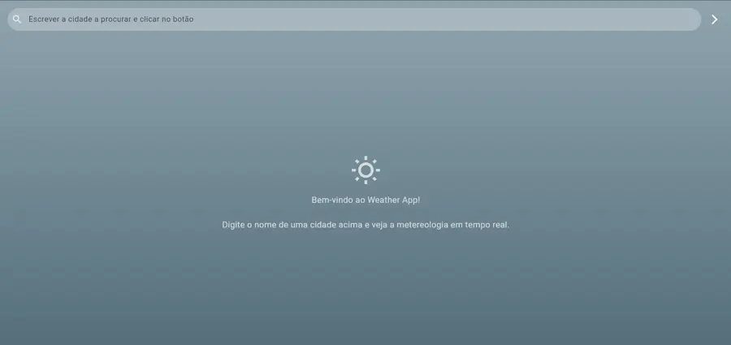

RobDroneGo
Protótipo de gestão de uma frota de robôs e drones, com pedidos de tarefas e planeamento da execução. Alguns módulos foram desenvolvidos parcialmente.
Node.js · Angular · Prolog · MongoDB · .NET
Desenvolvimento full stack · Dados
Desenvolvo projetos web e exploro o potencial dos dados. Junto a atenção ao detalhe da prática laboratorial à curiosidade de quem gosta de criar e resolver problemas.
Move o cursor ou diz-me olá.
01 / SOBRE MIM
Sou a Paula Rodrigues. Gosto de perceber como as coisas funcionam — e de encontrar formas de as melhorar.
O meu percurso começou nas análises clínicas, onde aprendi a trabalhar com rigor, responsabilidade e em equipa. O interesse pela tecnologia levou-me a concluir a licenciatura em Engenharia Informática no ISEP.
Nos projetos académicos e pessoais, tenho explorado o desenvolvimento web, a análise de dados e as aplicações interativas. Gosto tanto de construir uma interface clara como de perceber a lógica que a faz funcionar.
Quero continuar a crescer na área da tecnologia, aplicar o que já aprendi e contribuir para soluções úteis. Trago comigo uma perspetiva multidisciplinar e a vontade de aprender com cada projeto.
02 / PROJETOS SELECIONADOS
Projetos académicos, pessoais
e desafios técnicos.

Protótipo de gestão de uma frota de robôs e drones, com pedidos de tarefas e planeamento da execução. Alguns módulos foram desenvolvidos parcialmente.
Node.js · Angular · Prolog · MongoDB · .NET

Dashboard para visualizar e monitorizar sistemas de aprendizagem federada, com métricas e resultados que permitem analisar o desempenho dos diferentes nós participantes.
React · ECharts · Flower · XMPP · Docker

Primeiro portefólio com suporte a vários idiomas e integração com Firebase para guardar opiniões dos visitantes. Publicado na Vercel.
Next.js · TypeScript · Tailwind CSS · Firebase

Mascote digital que reage às interações do utilizador. Um projeto para explorar eventos DOM e gestão de estado, com novas funcionalidades e melhorias de design em perspetiva.
Electron · JavaScript · Node.js

Análise de um conjunto público de dados de comércio eletrónico brasileiro: limpeza, modelação, análise exploratória, dashboards e modelos preditivos com Python.
Python · Pandas · Jupyter Notebook · Plotly · Seaborn

Aplicação móvel em Flutter que apresenta a temperatura e as condições meteorológicas. Um ponto de partida para explorar novas funcionalidades e melhorar a experiência de utilização.
Flutter · Dart
O MEU TRABALHO, EM TRÊS PERSPETIVAS
Escolhe uma área e descobre
como se liga ao meu percurso.
Gosto de construir interfaces claras e de explorar a lógica que as suporta. Os meus projetos web e de aplicações são um espaço para experimentar, aprender e melhorar.
Em prática: First Portfolio, RobDroneGo e Mascot Assistant.
Explorar projetos web ↗Interessa-me transformar dados em informação clara. Tenho explorado a preparação de dados, a análise e a visualização através de projetos e formação em engenharia de dados.
Em prática: FL_Dashboard e o desafio de engenharia de dados da triggo.ai.
Explorar projetos de dados ↗A experiência nas análises clínicas ensinou-me a cuidar dos detalhes, a trabalhar em equipa e a lidar com responsabilidade. São hábitos que levo para os projetos de tecnologia.
Em prática: qualidade laboratorial, acompanhamento de estágios e gestão de stocks.
Conhecer o meu percurso ↗03 / COMPETÊNCIAS
Ferramentas que tenho utilizado nos meus projetos e explorado ao longo da formação.
JavaScript, TypeScript, React, Angular, Next.js, Tailwind CSS, Flutter e Dart.
Node.js, .NET, MongoDB, Firebase e Electron.
Python, Pandas, Jupyter Notebook, Plotly, Seaborn e ECharts. Formação em Databricks, Snowflake e dbt.
Português — língua materna · Inglês — nível B2.
04 / PERCURSO
Instituto Superior de Engenharia do Porto — ISEP
Formação em desenvolvimento de software, redes, segurança e tratamento de dados.
Escola Superior de Tecnologia da Saúde do Porto — ESTSP
Prática laboratorial aplicada à prevenção, diagnóstico e monitorização de doenças.
Percurso na Unidade Local de Saúde de Santo António (ULSSA) e na Unidade Local de Saúde de Trás-os-Montes e Alto Douro (ULSTMAD).
Formação que complementa os meus projetos: desenvolvimento de aplicações, engenharia de dados, redes e inteligência artificial.
Associate Developer (O11)
Associate Developer (ODC)
Fundamentos, arquitetura Lakehouse, ingestão de dados, pipelines, Unity Catalog, streaming e DevOps.
Hands On Essentials: Data Warehouse, Collaboration & Marketplace, Data Applications, Data Lake, Data Engineering e Data Science. dbt Learn Fundamentals.
Network Technician Career Path Exam, Introduction to Modern AI, Fundamentos do Scrum, Introdução à Ciência dos Dados e SEI’24.
05 / CONTACTO
Procuro oportunidades para aprender, contribuir e desenvolver soluções úteis. Se tens um projeto ou uma oportunidade que se enquadre no meu percurso, gostava de conversar contigo.
Escrever à Paula ↗Porto, Portugal